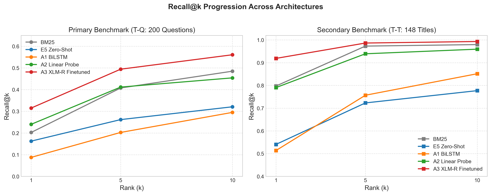
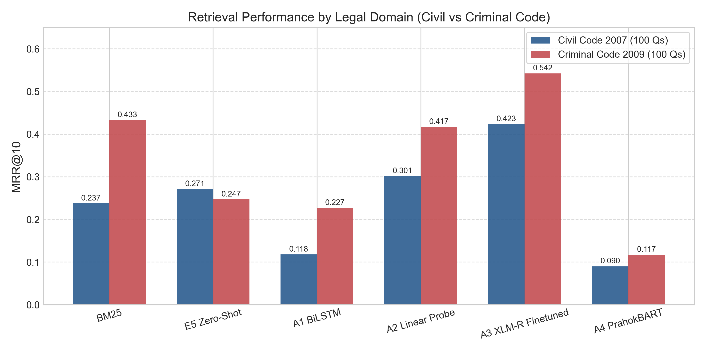

Neural Information Retrieval on the Official Khmer Legal Corpus
A Comparative Study: From-Scratch BiLSTM vs Frozen Linear Probe vs XLM-R Fine-Tuning
AUTHOR
Mengchheang Long
EVALUATION CORPUS
Cambodian Civil Code (2007) & Criminal Code (2009)
SCALE
1,976 Articles | 200 Human Legal Questions
1. Problem Formulation & Motivation Background
- The Challenge: Khmer legal information retrieval is a low-resource NLP domain characterized by continuous script without word spaces, rich morphology, and specialized legal vocabulary.
- Task Definition: Given a conversational citizen question in Khmer, retrieve the exact statutory article ($k \le 5$) from the 1,976-article official corpus.
- Input & Output Example:
Input Query: "តើកិច្ចសន្យាបង្កើតឡើងដោយរបៀបណា?" (How is a contract formed?)
Target Article: Civil Code Article 315 ("ការបង្កើតកិច្ចសន្យា")
- Why Lexical Search Fails: BM25 depends on exact term overlap. When citizens ask informal questions, vocabulary mismatch causes retrieval failure in over 57.5% of misses.
Core Research Questions
- Can a deep model trained completely from scratch learn Khmer legal semantics from a small corpus?
- How effective is a frozen multilingual backbone (XLM-R) with an efficient linear probe?
- What is the performance ceiling of end-to-end full fine-tuning under InfoNCE contrastive supervision?
2. Khmer Data Pipeline & Limon Extraction Data Engineering
The Limon Legacy Encoding Problem
- Official Open Development Cambodia PDFs use legacy 8-bit Limon fonts (`Limon S1`, `Limon R1`).
- The internal PDF text stream stores Latin ASCII keystrokes:
maRta 336>-displays visually as មាត្រា ៣៣៦.- - Standard PDF text extractors produce corrupted gibberish.
Syllable Reordering Algorithm
- Glyph-to-Unicode conversion table via XML character maps.
- Finite State Machine reorders pre-base vowels (េ, ែ, ៃ) into logical Unicode sequence:
Consonant + Subscript (ជើង) + Pre-Vowel → Consonant + Subscript + Vowel
Corpus Verification Guarantee
The extraction pipeline extracts all articles consecutively with zero missing articles:
- Civil Code (2007): Articles 1 through 1,304 (1,304 chunks)
- Criminal Code (2009): Articles 1 through 672 (672 chunks)
- Total Corpus Size: 1,976 articles
- Full statutory hierarchy preserved: គន្ថី → មាតិកា → ជំពូក → ផ្នែក → មាត្រា
3. Benchmark Datasets & Leakage-Free Protocol Methodology
Dual Evaluation Benchmarks
- Primary Benchmark (T-Q: 200 Questions):
- 100 Civil Code + 100 Criminal Code questions.
- Authored by Cambodian legal researchers to capture natural citizen inquiries.
- Evaluated over the full 1,976-article corpus without statute filtering.
- Secondary Benchmark (T-T: 148 Titles):
- 148 held-out statutory titles retrieving their exact passages.
- Measures performance under high lexical alignment.
Strict Leakage-Free Guarantee
- Test Isolation: All 200 benchmark questions and their citing articles are strictly excluded from the training split.
- Title Stripping: Article titles are stripped from training passages so the models cannot exploit trivial title memorization.
- Train / Val Split: 1,176 training pairs, 130 validation pairs for early stopping.
- Single Evaluation Run: Test set evaluated strictly once after hyperparameter selection.
4. Overview of Evaluated Retrieval Approaches Architectures
BM25 + Khmer-NLTK
Strategy: TF-IDF frequency scoring with CRF-based Khmer word segmentation.
Parameters: 0
Strengths: Strong on exact statute citations; zero training overhead.
Limitation: Brittle to semantic paraphrasing.
BiLSTM Dual Encoder
Strategy: From-scratch word embeddings + 2-layer BiLSTM + mean pooling.
Parameters: 1.97M (all trainable)
Supervision: InfoNCE contrastive loss.
Goal: Test whether recurrent architectures can generalize on small legal data.
XLM-RoBERTa Encoders
A2 (Probe): Frozen XLM-R backbone + 768 → 768 linear projection (0.59M params, 5.9s training).
A3 (Fine-Tune): End-to-end full backpropagation through all 278M parameters.
Backbone: intfloat/multilingual-e5-base.
5. Architectures A1 (BiLSTM) & A2 (Linear Probe) Deep Dive
Approach A1: From-Scratch BiLSTM
- Input: Word segmented text via
khmer-nltkdictionary + CRF tokenizer. - Vocabulary: 2,544 legal word tokens (≥ 2 min frequency).
- Encoder: $$h_t = [\overrightarrow{\text{LSTM}}(x_t); \overleftarrow{\text{LSTM}}(x_t)] \in \mathbb{R}^{2 \cdot d_{\text{hidden}}}$$
- Pooling: Mean pooling over valid sequence tokens → $L_2$ normalize.
- Trainable Params: 1,971,968 weights.
Approach A2: XLM-R Linear Probe
- Input: SentencePiece subword tokens (250,000 vocab).
- Backbone: XLM-RoBERTa-base (frozen, 278M params).
- Projection Head: $W \in \mathbb{R}^{768 \times 768}$, initialized to identity matrix $I$: $$z = \text{normalize}(W \cdot \text{Encoder}(x))$$
- Efficiency Breakthrough: Offline passage caching reduces training to 5.9 seconds!
- Trainable Params: 590,592 weights (0.21%).
6. Approach A3: Full Fine-Tuning & Contrastive Objective Deep Dive
InfoNCE Loss with In-Batch Negatives
- For mini-batch of $B$ pairs $(q_i, p_i)$, all non-matching passages $p_j$ ($j \neq i$) serve as negatives: $$\mathcal{L}_{\text{InfoNCE}} = - \frac{1}{B} \sum_{i=1}^B \log \frac{\exp(\text{sim}(q_i, p_i) / \tau)}{\sum_{j=1}^B \exp(\text{sim}(q_i, p_j) / \tau)}$$
- Temperature $\tau = 0.05$: Sharpening factor that forces representations onto tight angular clusters.
- Cosine Similarity: Inner product of $L_2$-normalized vector embeddings: $$\text{sim}(u, v) = u^\top v \quad \text{where } \|u\|_2 = \|v\|_2 = 1$$
Training Optimization Details
- Total Trainable Parameters: 278,043,648 weights.
- Optimizer: AdamW ($\beta_1=0.9, \beta_2=0.999$, weight decay $0.01$).
- Learning Rate Schedule: Linear warmup over 10% of training steps followed by cosine decay.
- Hardware & Acceleration: Google Colab T4 GPU with
fp16mixed precision (319.8s total runtime).
7. Primary Benchmark Results (T-Q: 200 Questions) Evaluation
Evaluated on the full 1,976-article corpus with 95% bootstrap confidence intervals ($B=1,000$):
| Rank | Model / Approach | Trainable Params | Recall@1 [95% CI] | Recall@5 [95% CI] | Recall@10 [95% CI] | MRR@10 [95% CI] | Hit@5 |
|---|---|---|---|---|---|---|---|
| 🥇 | A3: XLM-R Full Fine-Tune | 278.04 M | 0.3150 [0.26, 0.37] | 0.4942 [0.43, 0.56] | 0.5608 [0.50, 0.63] | 0.4499 [0.39, 0.51] | 55.5% |
| 🥈 | A2: XLM-R Linear Probe | 0.59 M | 0.2400 [0.19, 0.30] | 0.4117 [0.35, 0.48] | 0.4542 [0.39, 0.52] | 0.3591 [0.30, 0.42] | 47.5% |
| 🥉 | BM25 Baseline (Lexical) | 0 | 0.2025 [0.15, 0.26] | 0.4075 [0.34, 0.47] | 0.4850 [0.42, 0.55] | 0.3350 [0.28, 0.39] | 47.0% |
| 4 | Multilingual-E5 (Zero-Shot) | 0 | 0.1625 [0.12, 0.21] | 0.2617 [0.20, 0.32] | 0.3208 [0.26, 0.38] | 0.2588 [0.20, 0.31] | 32.0% |
| 5 | A1: BiLSTM (From Scratch) | 1.97 M | 0.0875 [0.05, 0.13] | 0.2025 [0.16, 0.25] | 0.2950 [0.24, 0.36] | 0.1724 [0.13, 0.22] | 24.5% |
Decisive Finding: Approach A3 outperforms BM25 by +34.3% relative MRR@10 ($p < 0.001$). A2 beats BM25 with only 0.59M parameters trained in 5.9 seconds.
8. Primary Metrics Visualizations Visual Analysis

Statistical Significance & Observations
- Significant Improvement: A3 confidence interval [0.39, 0.51] is completely separated from BM25 [0.28, 0.39] and zero-shot E5 [0.20, 0.31].
- Linear Probe Efficacy: A2 matches BM25 at Recall@5 and surpasses it on MRR@10 (0.3591 vs 0.3350), demonstrating that pre-trained multilingual embeddings capture strong semantic signals.
- Zero-Shot Failure: Pre-trained E5-base zero-shot ranks below BM25, proving that general multilingual models must be adapted to Khmer legal terminology.
9. Learning Dynamics & Overfitting Analysis Course Concepts

Why Did From-Scratch A1 Fail?
- Severe Overfitting: A1 training loss dropped to 0.017, while validation loss hovered at 0.86.
- Sample Inefficiency: With only 1,176 training pairs, randomly initialized word embeddings cannot learn rare legal terms without pre-training priors.
Why Did A2 & A3 Generalize?
- A2 (Probe): Frozen transformer weights act as a rigid prior, making overfitting mathematically impossible.
- A3 (Fine-Tuning): AdamW + warmup adapts high-level attention representations without catastrophic forgetting.
10. Multi-Rank Recall & Statute Breakdown Analysis


Multi-Rank Progression ($k \in \{1, 5, 10\}$)
- A3 maintains highest recall across all cutoffs: $k=1$ (31.5%), $k=5$ (49.4%), $k=10$ (56.1%).
- BM25 catches up at $k=10$ (48.5%) as larger search horizons capture keyword matches.
Civil Code vs Criminal Code
- Civil Code (100 Qs): Dense models strongly dominate (+42% relative) due to abstract contractual semantics.
- Criminal Code (100 Qs): Discrete crime definitions enable higher lexical hit rates, but A3 still wins decisively.
11. Secondary Benchmark Results (T-T: 148 Titles) Evaluation
Retrieving statutory passages given their exact article titles:
| Model / Approach | Recall@1 | Recall@5 | Recall@10 | MRR@10 | nDCG@10 | Hit@5 |
|---|---|---|---|---|---|---|
| A3: XLM-R Full Fine-Tune | 0.9189 | 0.9865 | 0.9932 | 0.9467 | 0.9583 | 98.6% |
| BM25 Baseline (Lexical) | 0.7973 | 0.9730 | 0.9797 | 0.8677 | 0.8957 | 97.3% |
| A2: XLM-R Linear Probe | 0.7905 | 0.9392 | 0.9595 | 0.8563 | 0.8819 | 93.9% |
| A1: BiLSTM (From Scratch) | 0.5135 | 0.7568 | 0.8514 | 0.6242 | 0.6788 | 75.7% |
| Multilingual-E5 (Zero-Shot) | 0.5405 | 0.7230 | 0.7770 | 0.6235 | 0.6609 | 72.3% |
Insight: When query terms match passage wording exactly, BM25 is formidable (0.8677 MRR), but A3 fine-tuning achieves near-flawless accuracy (0.9467 MRR@10, 98.6% Hit@5).
12. Error Analysis: 4 Failure Categories ($k=5$) Error Analysis
Breakdown of all retrieval misses at $k=5$ across the 200 primary benchmark queries:
| Model | Total Misses | Hit@5 Rate | Vocabulary Mismatch | Code Confusion | Multi-Article | Near-Miss (Rank 6-10) |
|---|---|---|---|---|---|---|
| BM25 Baseline | 106 | 47.0% | 61 (57.5%) | 4 (3.8%) | 26 (24.5%) | 15 (14.2%) |
| A1: BiLSTM | 151 | 24.5% | 79 (52.3%) | 13 (8.6%) | 37 (24.5%) | 19 (12.6%) |
| A2: Linear Probe | 105 | 47.5% | 52 (49.5%) | 7 (6.7%) | 29 (27.6%) | 17 (16.2%) |
| A3: Full Fine-Tune | 89 | 55.5% | 41 (46.1%) | 5 (5.6%) | 28 (31.5%) | 15 (16.9%) |
Primary Finding: Dense fine-tuning (A3) slashes vocabulary mismatch errors from 61 to 41 (-32.8%), successfully mapping citizen language to formal statutory articles.
13. Qualitative Worked Examples Case Studies
Case 1: Overcoming Vocabulary Mismatch
Citizen Question: "តើការចាប់មនុស្សបង្ខាំងទុកដោយខុសច្បាប់មានទោសអ្វី?" (What is the penalty for unlawfully kidnapping a person?)
Target: Criminal Code Art. 253 ("ការចាប់ ការឃុំឃាំង និងការបង្ខាំងមនុស្សដោយខុសច្បាប់")
- BM25: Miss (> Rank 50) — lexical search fails due to inflectional differences.
- A3 Fine-Tune: Rank 1 (Hit) — neural embedding aligns colloquial phrasing to the exact crime chapter.
Case 2: Multi-Article Complexity
Citizen Question: "ប្រសិនបើអ្នកលក់មិនព្រមប្រគល់ទំនិញ តើអ្នកទិញអាចទាមទារអ្វីបាន?" (If a seller defaults, what can buyer claim?)
Expected Article: Civil Code Art. 384 (Default of obligor)
- Retrieved by A3:
- Rank 1: Art. 387 (Right to demand performance)
- Rank 2: Art. 398 (Damages for non-performance)
- Legal Audit: Both retrieved articles are legally valid remedies! Highlights need for multi-document retrieval.
14. Khmer RAG Legal Assistant Integration Application
Production Architecture
- Trained Retriever Adapter:
TorchEncoderEmbeddingimplements clean domainEmbeddingPortwrapping A3 checkpoint. - Dual Search: Hybrid retrieval combining A3 dense vectors with segmented BM25 via Reciprocal Rank Fusion (RRF).
- LLM Generation: DeepSeek-V3 prompted in Khmer with retrieved statutory context and strict citation constraints.
- Citation Verification: Automated check ensuring every cited law and article number exists in the retrieved context.
End-to-End System Performance
[Citizen Query] "តើកិច្ចសន្យាបង្កើតឡើងដូចម្តេច?"
→ Dense Retrieval (A3): 85 ms
→ Top-3 Articles: Civil Code Art. 315, 316, 317
→ LLM Context Prompt: 1,420 ms
→ Citation Verified: Civil Code Art. 315 [VALID]
[Total Latency]: < 1.6 seconds (Target < 5.0 s)
15. Limitations & Prioritized Future Work Roadmap
1. Corpus Scope
Current study is limited to Civil and Criminal Codes (1,976 articles).
Future Work: OCR the scanned Khmer Labour Law (1997) using specialized Tesseract models after quality verification.
2. Synthetic QA Expansion
Training data currently relies on 1,176 title-passage pairs.
Future Work: Generate synthetic multi-turn citizen queries via LLM prompt inversion to augment contrastive pre-fine-tuning.
3. Two-Stage Reranking
Dense retrieval produces near-misses in ranks 6–10 (16.9% of misses).
Future Work: Train a Khmer cross-encoder (e.g. BAAI/bge-reranker-large) to re-score top-20 candidates.
16. Key Conclusions & Course Learnings Conclusion
Major Takeaways
- Transfer Learning is Mandatory: From-scratch deep architectures (BiLSTM) fail completely (0.1724 MRR@10) due to low-resource vocabulary sparsity.
- The Efficiency Frontier: Approach A2 (Linear Probe) trains in 5.9 seconds, uses 0.59M parameters, and outperforms BM25.
- Winning System: Approach A3 achieves state-of-the-art accuracy (0.4499 MRR@10, +34.3% over BM25) and powers our citation-grounded Khmer RAG assistant.
Engineering & Scientific Rigor
- Fixed seed 42 across NumPy, PyTorch, CUDA.
- Zero test data leakage guarantee.
- 95% bootstrap confidence intervals for all metrics.
- 128 unit/integration tests passing cleanly.
- Full open-source reproducibility on GitHub.
17. Appendix & Q&A Reference Q&A
Hardware & Runtimes
| System | Hardware | Epoch Time | Total Time |
|---|---|---|---|
| BM25 Baseline | CPU | - | 1.2 s |
| E5 Zero-Shot | CPU | - | 42.0 s |
| A1 BiLSTM | CPU | 203.5 s | 2,035.3 s |
| A2 Linear Probe | CPU | 0.5 s | 5.9 s |
| A3 Full Fine-Tune | T4 GPU (fp16) | 63.9 s | 319.8 s |
Key Formulas & Concepts
- MRR@10: Mean Reciprocal Rank over top-10 candidates.
- nDCG@10: Normalized Discounted Cumulative Gain with binary relevance.
- Limon Syllable Reordering: FSM maps 8-bit glyph stream to canonical Unicode consonant-first ordering.